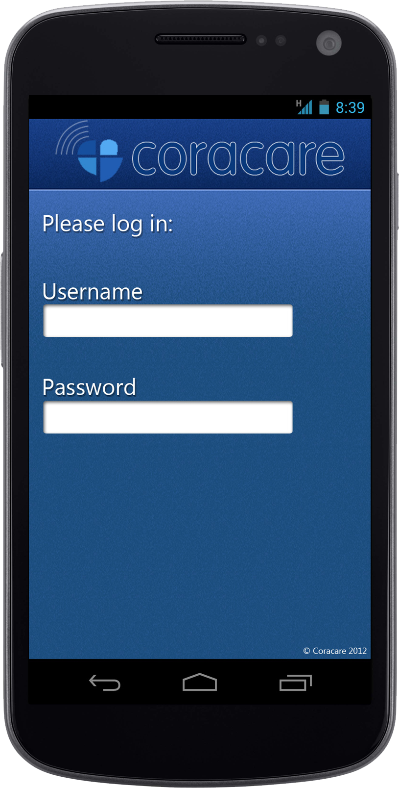
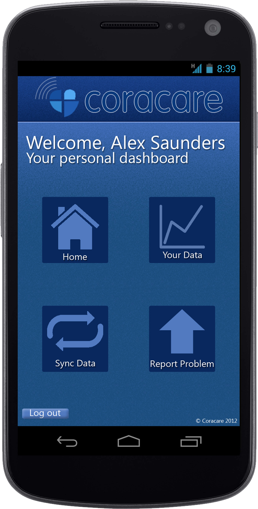
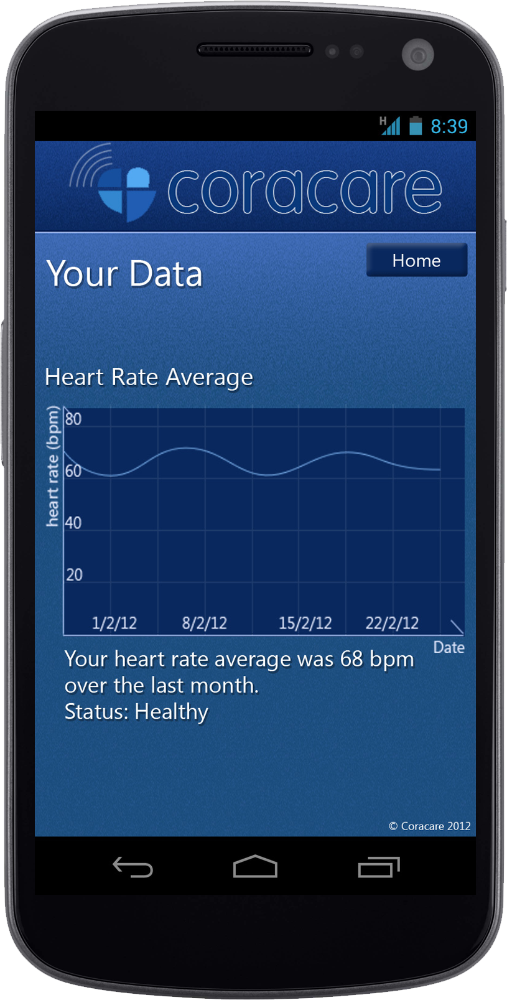
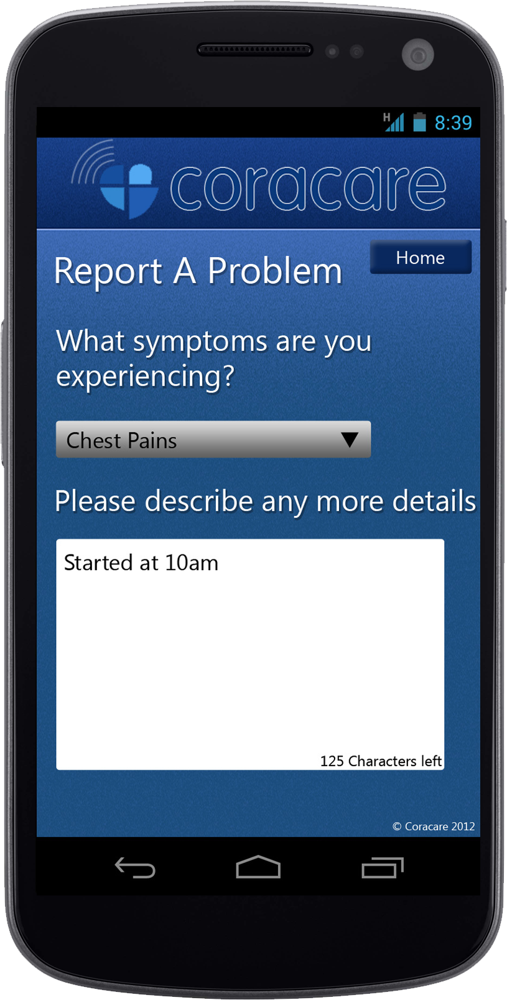

Coracare CX50
The CX50 is a new and innovative device brought to you by Coracare. Listed below are the main reasons why the CX50 provides you a better quality service than any other device on the market.
- Context Aware Data - unlike most of Coracare’s competitors, the CX50 includes an accelerometer and temperature sensor, providing the user’s healthcare provider with context aware data to make a more informed diagnostic concerning their ECG trace.
- Comfort - user comfort is of paramount importance to Coracare. Therefore we have designed the CX50 to be as unobtrusive and hassle free as possible. To this end the CX50 requires no cleaning or shaving of the skin, and no application of any gel, before being applied. Also a wireless link between the CX50 and PDA is used, replacing the standard and inconvenient wire connection. Finally, contactless ECG nodes, and the fact that the entire device is mounted on a single silicon patch, make the CX50 a smaller, lighter and more comfortable solution than any of its competitors.
- Battery Life – The CX50 can run for 30 days without needing to be recharged or have its batteries replaced. This minimizes the hassle involved for the user in maintaining their device, and keeps the user safe in the knowledge that their heart rate monitor will not run out of power while they are out and about. Therefore the CX50 offers an unparalleled service in terms of allowing the user to go about their daily lives without the constant worry of maintaining their heart rate monitor.
- How the service works - Data is sent from the CX50 to your smartphone every minute, where it is then processed. If an anomaly is detected, it will be sent to the Coracare servers for more advanced and comprehensive processing. If the anomaly fails any of the tests it will be sent to one of our trained technicians for final analysis. If the technician has any doubts then the data will be sent as an alert to the user’s doctor and their nearest hospital.
Coracare Smartphone Application
- 
- 
- 
- 
The CX50 is used with its complementary smartphone app, which can be downloaded on your favorite app store. The application will only worked on smartphones tested and approved for compatibility.
- Review Data - the Coracare app allows users to view their whole history of data on the go and see what is is being recorded in real time.
- Secure - the data stored on the users smartphone is encrypted with military grade AES-256 encryption algortihm for total peace of mind. Additionally to access past data users are required to login again to avoid snooping from other people.
- Always up-to-date – the advantage of using the Coracare application is that whenever Coracare improves its algorithms or enhances other parts of its service the user can use it straight away.
- Always synced - data is sent to the smartphone every minute which is encrypted and then stored. Whenever a wi-fi connection is available data is uploaded to avoid data charges as well as improve battery life.
- Note - Please be aware that without signal coverage, information cannot be sent to our servers. Total data transmitted from your phone to our servers can be up to 1GB a month. For this reason, we recommend you use a wi-fi connection for end of day transmissions.
CX50 Hardware
The CX50 comes in a medical-grade silicon slab to achieve superior comfort by holding on to the chest with only light suction.
It includes 5 high-quality ECG nodes to allow data collection needed for advanced diagnosis. An accelerometer and a thermometer are also included to help doctors make fully informed decisions.
Specifications
Dimensions: 10cm x 16cm x 1.5cm = 240cm³
Weight: 250 grams
Battery life: 1 month (using provided batteries)
Wireless standards: 2.4Ghz Bluetooth 4 low energy
ECG sampling rate: 500Hz
ECG technology: Capacitative (no direct skin contact needed)
Encryption: AES-256
Temperature range: -30°C to 60°C
Supply volatge: 3.3V
Waterproof and resistant to day-to-day shocks.